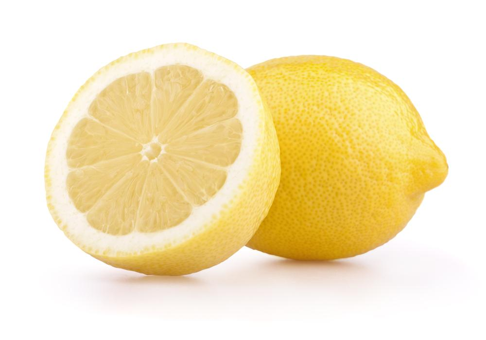

Dr Montylemon files lawsuit against false uses of his name

Dr Montylemon from the university of Cambridge voiced his concerns of children making up facts and crediting him in debates. Making up facts in a debate is a federal crime and is punishable by death. Dr Montylemon has been very
bitter about this and he believes that the use of his name to make absurd claims is unjustifiable and plans to take DAV debate teams to court for $250,000.
"According to the third speaker of one team I said that Yahoo answers was reliable"
Dr Montylemon denies allegations of having mentioned facts about public transport, animal testing or tourism, and claims to not be a part of the ICUP foundation. When asked if he identifies as a lemon he remained silent. In his tweet he classified this behavior as "intolerable".
The debate team accused of misrepresenting Dr Montylemon has already made progress in defending themselves and have already prepared a team split however will obviously procrastinate their speeches until the last day.
The third speaker of the defending team intends to cut down Dr Montylemons lemon-tree of arguments at the roots however Dr Montylemon is able to cite Dr Montylemon in the debate which makes his facts infinitely more credible.
This debate will be scored by 11 professional adjudicators and unfortunately there will be no feedback to the speakers of this debate, and no best speaker will be awarded to the best team.
This upcoming debate, also known as a court session, will likely occur on the 22nd of July, however this may be moved due to it clashing with another court session with Dr Montylemon and in
zest.
Click on this article to find out more about this upcoming debate.